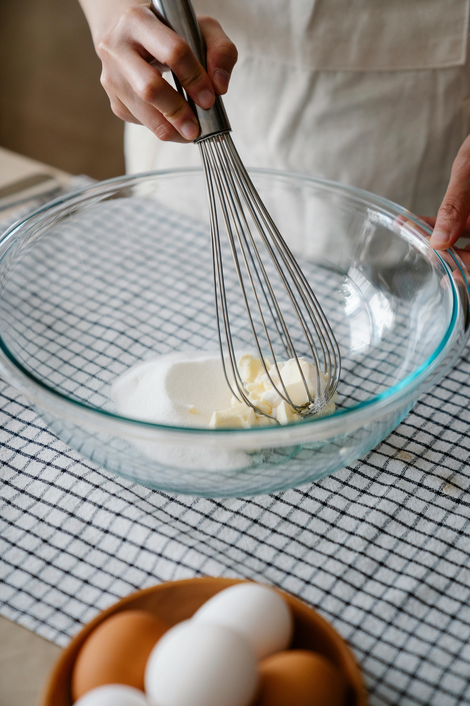
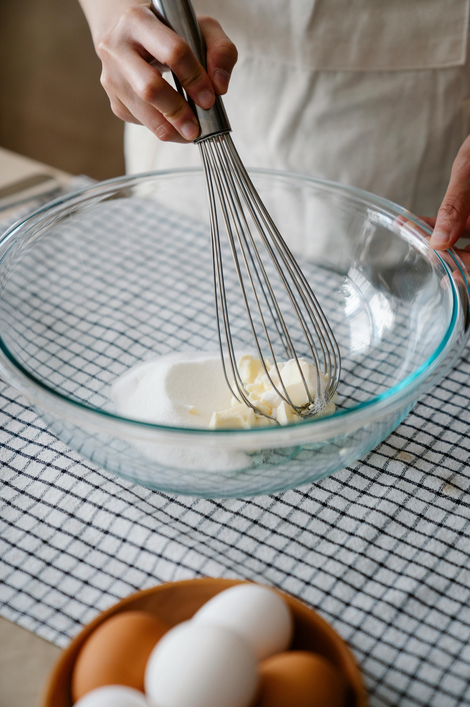
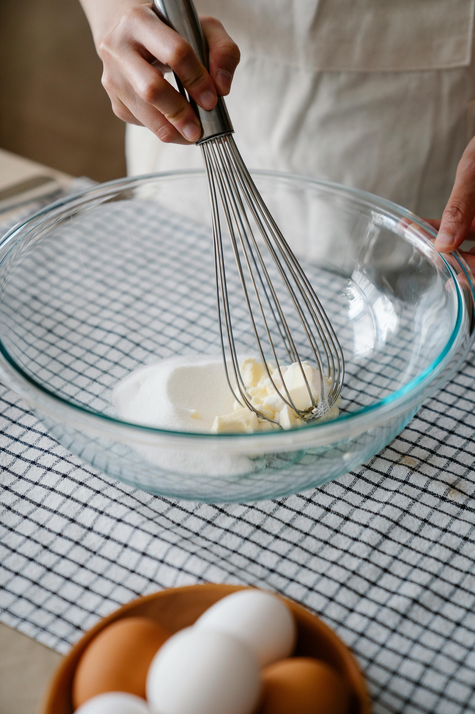

1. Step one: Preheat the oven to 350 F. 2. Step two: Mix your dry ingredients (flour, BP and salt).3. Step three: If using the vanilla beans, take a stalk and with a sharp knife, cut down the middle, careful not to go straight through. Peel back the husk and with the edge of the knife, scrape out all the little bean particles. Add this and the vanilla extract to the butter and mix.
4. Step four: In a separate bowl add the eggs and sugar together. Whilst whisking this, slowly add the butter/vanilla mix, alternating with the dry ingredients. Once all incporporated add the milk. DO NOT OVERMIX5. Step five: Add even amounts of batter to a lined cupcake tin.6. Step six: Bake for 18-20 min, checking with a knife in the center to see if they're baked through (I would recommend checking around 18 minutes, and aim for a cupcake closest to the front. If it's still cakey leave in the oven for 20 min).7. Step seven: Once done, take out of the oven and let stand for about 10 min in the tin to completely cool. Then frost as desired.
 4. Step four: In a separate bowl add the eggs and sugar together. Whilst whisking this, slowly add the butter/vanilla mix, alternating with the dry ingredients. Once all incporporated add the milk. DO NOT OVERMIX

5. Step five: Add even amounts of batter to a lined cupcake tin.
6. Step six: Bake for 18-20 min, checking with a knife in the center to see if they're baked through (I would recommend checking around 18 minutes, and aim for a cupcake closest to the front. If it's still cakey leave in the oven for 20 min).
7. Step seven: Once done, take out of the oven and let stand for about 10 min in the tin to completely cool. Then frost as desired.
4. Step four: In a separate bowl add the eggs and sugar together. Whilst whisking this, slowly add the butter/vanilla mix, alternating with the dry ingredients. Once all incporporated add the milk. DO NOT OVERMIX

5. Step five: Add even amounts of batter to a lined cupcake tin.
6. Step six: Bake for 18-20 min, checking with a knife in the center to see if they're baked through (I would recommend checking around 18 minutes, and aim for a cupcake closest to the front. If it's still cakey leave in the oven for 20 min).
7. Step seven: Once done, take out of the oven and let stand for about 10 min in the tin to completely cool. Then frost as desired.